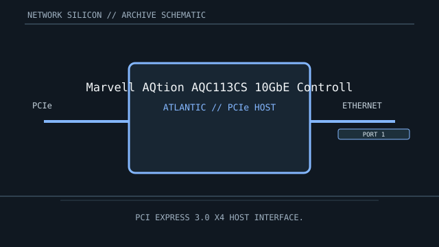

[ MODEL-SPECIFIC NETWORK HARDWARE ]
Marvell AQtion AQC113CS 10GbE Controller
Single-port multi-gigabit 10GBASE-T controller for PCIe add-in cards and motherboard LAN. This is a controller/chip record; finished-card details are implementation-specific.

IDENTIFICATION: Match complete component top-mark, stepping and board revision. Nominal signaling rates are not measurements of application throughput.
Exact specifications and compatibility
| Dedicated subcategory | Ethernet controllers and PHYs |
|---|---|
| Exact controller identity | Marvell AQtion AQC113CS 10GbE Controller |
| Component / board identity | AQtion controller with integrated copper Ethernet PHY; board design supplies the RJ-45/magnetics and cooling. |
| PCIe bus and host interface | PCI Express 4.0 x4 host interface. |
| Ethernet ports / physical interface | One 10GBASE-T port supporting 10/5/2.5/1 Gb/s and 100 Mb/s rates subject to controller implementation, cabling and link partner. |
| Nominal rate (not measured) | Up to 10 Gb/s nominal on one copper port; not measured throughput. |
| Drivers and OS compatibility | Linux atlantic driver supports Marvell/Aquantia AQtion devices; Windows driver availability is provided by Marvell or the adapter/OEM vendor for listed revisions. Confirm the exact subsystem ID and firmware. |
| Board / system compatibility | Requires an AQC113CS-based PCIe board with appropriate PCIe lanes, power, copper front-end, magnetics and thermal solution. 10GBASE-T link rates require a compatible switch and suitable cabling. |
| Revision and variant warning | AQC113CS is distinct from AQC107 and AQC113-family revisions; confirm exact chip marking and carrier. Firmware and OEM driver packages may be board-specific. |
| Measured throughput | No measured benchmark is claimed for a physical specimen. A valid result records the host, link partner, medium, driver/firmware, traffic pattern, test tool and duration. |
Identification and revision notes
AQC113CS is distinct from AQC107 and AQC113-family revisions; confirm exact chip marking and carrier. Firmware and OEM driver packages may be board-specific.
Linux atlantic driver supports Marvell/Aquantia AQtion devices; Windows driver availability is provided by Marvell or the adapter/OEM vendor for listed revisions. Confirm the exact subsystem ID and firmware.
Requires an AQC113CS-based PCIe board with appropriate PCIe lanes, power, copper front-end, magnetics and thermal solution. 10GBASE-T link rates require a compatible switch and suitable cabling.
Archival and preservation notes
Capture the full silicon mark, board revision, MAC/PCI IDs, firmware and heatsink arrangement. Record the cable category and partner port when documenting any observed link rate.
For an installed specimen, preserve source URL, access date, source revision and label/condition notes. Do not infer connector count or board-level compatibility from controller family name alone.
Manufacturer and driver sources
- Marvell Ethernet adapters and controllersMarvell product information for AQtion Ethernet controllers and adapter implementations.
- Linux kernel Aquantia/Marvell atlantic driver documentationLinux atlantic driver compatibility and configuration notes for AQtion controller family devices.
Sources cover the named controller family and its relevant driver ecosystem. The exact board vendor’s compatibility list takes precedence for a finished adapter or motherboard implementation.